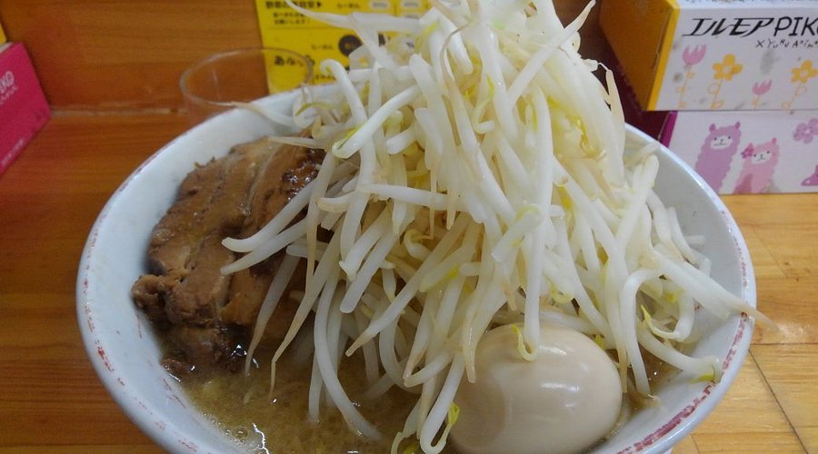
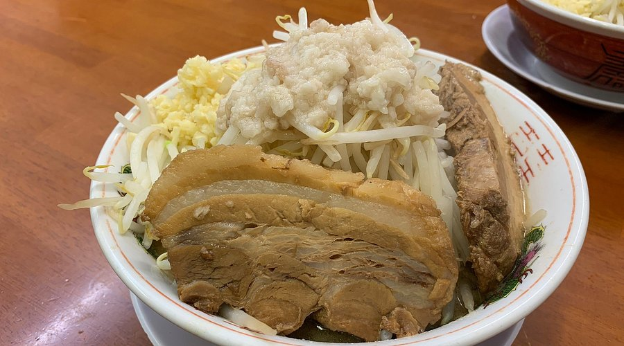

05. ที่พัก & ร้านอาหาร
เปรียบเทียบที่พักรอบสถานี Tsukuba Station พร้อมลิงก์ Agoda, Booking.com, Trip.com, Google Maps, Tabelog และ Tripadvisor
ค้นหารายชื่อโรงแรมและราคา Tsukuba แบบครบถ้วน
ดึงข้อมูลจริงจากลิงก์ผลการค้นหา Agoda & Booking.com สำหรับเมือง Tsukuba
1. รายชื่อที่พักยุทธศาสตร์ (รอบสถานี Tsukuba Station)

Daiwa Roynet Hotel Tsukuba
101 เมตร จากสถานี Tsukuba (ทางออก A5)
ทำเลอันดับ 1 เดินเพียง 1 นาทีจากสถานี Tsukuba Express เชื่อมต่อ Bus Terminal กลาง สะดวกที่สุดสำหรับการเดินทางครอบครัว ไม่ต้องลากกระเป๋าไกล

Hotel Nikko Tsukuba
เดิน 3 นาที จากสถานี Tsukuba (ทางออก A3)
โรงแรมสไตล์ Full-service หรูหรา ห้องกว้างขวาง มีสระว่ายน้ำในร่ม และห้องอาหารชั้นเลิศ เชื่อมต่อกับเส้นทางเดินลอยฟ้า Pedestrian Deck ไปยัง Expo Center
HOTEL JAL City Tsukuba
เดิน 8 นาที จากสถานี Tsukuba
โรงแรมมาตรฐานเครือ Okura Nikko บรรยากาศเงียบสงบ ห้องพักสะอาดทันสมัย บริการระดับพรีเมียม เดินไปยังใจกลางเมืองได้สบาย

Toyoko Inn Tsukuba-eki
Kenkyu-gakuen Station (1 สถานีจาก Tsukuba)
โรงแรมประหยัดคุ้มค่า ฟรีอาหารเช้าสไตล์ญี่ปุ่น เดินเพียง 3 นาทีจากสถานีKenkyu-gakuen อยู่ใกล้ห้างสรรพสินค้า iias Tsukuba ห้างใหญ่ที่สุดในแถบนี้

2. อาหารเด็ด & ประสบการณ์ความอร่อยท้องถิ่น
🍜 Ramen Tatsuro (ラーメン龍郎)
3-8-1 Azuma, Tsukuba-shi, Ibaraki (725 เมตร จากสถานี Tsukuba Station / ติด Tsukuba Expo Center)

Miso Ramen – Fully Loaded: ซุปกระดูกหมูมิโสะผักพูนๆ ชาชูหนาชิ้นโต (ภาพถ่าย Tripadvisor)

ราเมนสไตล์จิโร่ ขวัญใจนักศึกษามหาวิทยาลัยสึกุบะ (ภาพถ่าย Tripadvisor)
เวลาทำการ & วันหยุด
- เวลาเปิด-ปิด: 11:30 - 14:30 น. และ 17:30 - 22:00 น.
- วันหยุด: เปิดทำการทุกวันตลอดปี (Open year-round)
- เงื่อนไข: ปิดร้านเมื่อวัตถุดิบหมด
งบประมาณ & การชำระเงิน
- งบประมาณเฉลี่ย: ~ 999 เยน / คน
- การชำระเงิน: **รับเฉพาะเงินสดเท่านั้น** (ไม่รับบัตรเครดิต/Electronic Money/QR)
- อันดับ Tripadvisor: **อันดับ 67 จาก 1,362 ร้านอาหารใน Tsukuba**
ร้านราเมนยอดนิยมสไตล์ Jiro-inspired Ramen เมนูเด็ดประจำร้านคือ "Miso Ramen (並) 全マシ" ซุปเข้มข้นหอมเต้าเจี้ยวมิโสะ ท็อปปิ้งกระเทียมสดสับ ถั่วฝักยาว/ถั่วงอกพูนชาม และหมูชาชูชิ้นหนานุ่ม เหมาะมากสำหรับการเติมพลังงานความอบอุ่นในฤดูหนาว
🥩 เนื้อวัวฮิตาจิ (Hitachi Beef) & หมูทซึคุบะ (BiVi Tsukuba)
ดูบน Google Mapsเสิร์ฟในรูปแบบสเต๊ก สุกี้ยากี้ หรือทงคัตสึ รับประทานได้สะดวก ณ ศูนย์การค้า BiVi Tsukuba ติดกับสถานี Tsukuba Station